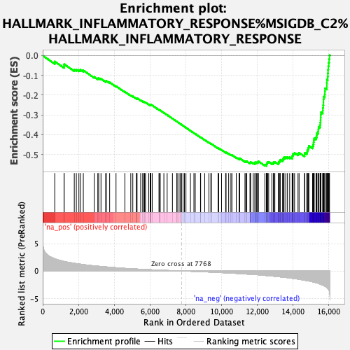
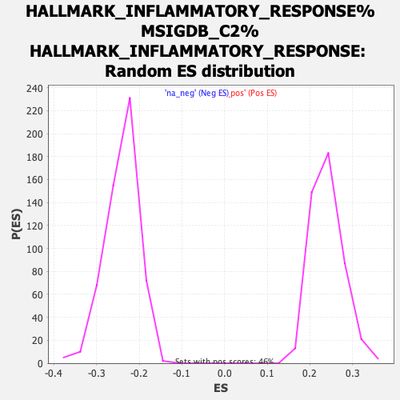

| | | Dataset | rankings |
| Phenotype | NoPhenotypeAvailable |
| Upregulated in class | na_neg |
| GeneSet | HALLMARK_INFLAMMATORY_RESPONSE%MSIGDB_C2%HALLMARK_INFLAMMATORY_RESPONSE |
| Enrichment Score (ES) | -0.55878973 |
| Normalized Enrichment Score (NES) | -2.3245142 |
| Nominal p-value | 0.0 |
| FDR q-value | 0.0 |
| FWER p-Value | 0.0 |
Table: GSEA Results Summary

Fig 1: Enrichment plot: HALLMARK_INFLAMMATORY_RESPONSE%MSIGDB_C2%HALLMARK_INFLAMMATORY_RESPONSE
Profile of the Running ES Score & Positions of GeneSet Members on the Rank Ordered List
| PROBE | GENE SYMBOL | GENE_TITLE | RANK IN GENE LIST | RANK METRIC SCORE | RUNNING ES | CORE ENRICHMENT | | 1 | CALCRL | | | 674 | 2.235 | -0.0299 | No |
| 2 | SRI | | | 1194 | 1.743 | -0.0528 | No |
| 3 | CMKLR1 | | | 1201 | 1.735 | -0.0435 | No |
| 4 | SCN1B | | | 1767 | 1.395 | -0.0713 | No |
| 5 | ABI1 | | | 1882 | 1.339 | -0.0710 | No |
| 6 | ADRM1 | | | 2024 | 1.278 | -0.0727 | No |
| 7 | VIMP | | | 2109 | 1.241 | -0.0711 | No |
| 8 | DCBLD2 | | | 2272 | 1.160 | -0.0748 | No |
| 9 | MMP14 | | | 2883 | 0.928 | -0.1080 | No |
| 10 | AXL | | | 3083 | 0.870 | -0.1156 | No |
| 11 | SLC31A1 | | | 3133 | 0.857 | -0.1139 | No |
| 12 | PCDH7 | | | 3261 | 0.819 | -0.1173 | No |
| 13 | C3AR1 | | | 3523 | 0.740 | -0.1296 | No |
| 14 | P2RY2 | | | 3559 | 0.731 | -0.1278 | No |
| 15 | LY6E | | | 3745 | 0.678 | -0.1356 | No |
| 16 | HRH1 | | | 4101 | 0.589 | -0.1546 | No |
| 17 | IFNGR2 | | | 4596 | 0.468 | -0.1831 | No |
| 18 | IL18 | | | 4927 | 0.406 | -0.2015 | No |
| 19 | TNFSF10 | | | 5040 | 0.386 | -0.2064 | No |
| 20 | EDN1 | | | 5246 | 0.348 | -0.2174 | No |
| 21 | GPC3 | | | 5250 | 0.347 | -0.2156 | No |
| 22 | GNAI3 | | | 5278 | 0.342 | -0.2154 | No |
| 23 | LPAR1 | | | 5480 | 0.308 | -0.2263 | No |
| 24 | AHR | | | 5592 | 0.285 | -0.2317 | No |
| 25 | SLC4A4 | | | 5667 | 0.273 | -0.2349 | No |
| 26 | ACVR1B | | | 5695 | 0.266 | -0.2351 | No |
| 27 | RAF1 | | | 5748 | 0.260 | -0.2369 | No |
| 28 | SLC7A2 | | | 5929 | 0.232 | -0.2469 | No |
| 29 | MSR1 | | | 6012 | 0.220 | -0.2508 | No |
| 30 | ACVR2A | | | 6016 | 0.219 | -0.2498 | No |
| 31 | BST2 | | | 6034 | 0.216 | -0.2497 | No |
| 32 | TLR3 | | | 6036 | 0.216 | -0.2485 | No |
| 33 | PDPN | | | 6048 | 0.214 | -0.2480 | No |
| 34 | EIF2AK2 | | | 6125 | 0.201 | -0.2517 | No |
| 35 | SLC11A2 | | | 6504 | 0.145 | -0.2746 | No |
| 36 | F3 | | | 6545 | 0.140 | -0.2764 | No |
| 37 | INHBA | | | 6573 | 0.136 | -0.2773 | No |
| 38 | ITGB8 | | | 6778 | 0.111 | -0.2895 | No |
| 39 | RTP4 | | | 6962 | 0.089 | -0.3005 | No |
| 40 | RELA | | | 7257 | 0.052 | -0.3187 | No |
| 41 | MARCO | | | 7503 | 0.025 | -0.3339 | No |
| 42 | TACR1 | | | 7518 | 0.024 | -0.3347 | No |
| 43 | STAB1 | | | 7628 | 0.013 | -0.3415 | No |
| 44 | CD55 | | | 7692 | 0.007 | -0.3454 | No |
| 45 | HIF1A | | | 7771 | -0.000 | -0.3503 | No |
| 46 | FZD5 | | | 7849 | -0.008 | -0.3551 | No |
| 47 | APLNR | | | 7930 | -0.016 | -0.3600 | No |
| 48 | KCNJ2 | | | 8013 | -0.025 | -0.3650 | No |
| 49 | EMP3 | | | 8264 | -0.056 | -0.3804 | No |
| 50 | HPN | | | 8459 | -0.080 | -0.3922 | No |
| 51 | ATP2A2 | | | 8533 | -0.090 | -0.3962 | No |
| 52 | CYBB | | | 8827 | -0.129 | -0.4139 | No |
| 53 | IRF7 | | | 8835 | -0.130 | -0.4137 | No |
| 54 | SEMA4D | | | 9062 | -0.159 | -0.4270 | No |
| 55 | RHOG | | | 9297 | -0.189 | -0.4406 | No |
| 56 | SLC31A2 | | | 9406 | -0.205 | -0.4463 | No |
| 57 | TIMP1 | | | 9435 | -0.210 | -0.4469 | No |
| 58 | SERPINE1 | | | 9813 | -0.273 | -0.4690 | No |
| 59 | IFITM1 | | | 9844 | -0.279 | -0.4693 | No |
| 60 | RNF144B | | | 10003 | -0.303 | -0.4776 | No |
| 61 | ABCA1 | | | 10233 | -0.342 | -0.4901 | No |
| 62 | CD40 | | | 10258 | -0.345 | -0.4897 | No |
| 63 | SCARF1 | | | 10402 | -0.369 | -0.4966 | No |
| 64 | IL18R1 | | | 10528 | -0.392 | -0.5023 | No |
| 65 | HBEGF | | | 10585 | -0.402 | -0.5035 | No |
| 66 | ITGA5 | | | 10828 | -0.445 | -0.5163 | No |
| 67 | TAPBP | | | 10993 | -0.480 | -0.5239 | No |
| 68 | P2RX4 | | | 11002 | -0.481 | -0.5217 | No |
| 69 | CCRL2 | | | 11018 | -0.484 | -0.5200 | No |
| 70 | KIF1B | | | 11314 | -0.545 | -0.5355 | No |
| 71 | CX3CL1 | | | 11364 | -0.556 | -0.5355 | No |
| 72 | PTGER4 | | | 11415 | -0.566 | -0.5355 | No |
| 73 | TPBG | | | 11593 | -0.604 | -0.5432 | No |
| 74 | RIPK2 | | | 11614 | -0.609 | -0.5411 | No |
| 75 | TNFAIP6 | | | 11626 | -0.611 | -0.5384 | No |
| 76 | CSF1 | | | 11777 | -0.644 | -0.5442 | No |
| 77 | PTGIR | | | 11872 | -0.663 | -0.5464 | No |
| 78 | SLC1A2 | | | 11875 | -0.664 | -0.5429 | No |
| 79 | CHST2 | | | 11884 | -0.665 | -0.5397 | No |
| 80 | CD14 | | | 11965 | -0.683 | -0.5409 | No |
| 81 | ATP2B1 | | | 12018 | -0.695 | -0.5403 | No |
| 82 | MET | | | 12052 | -0.704 | -0.5384 | No |
| 83 | NFKB1 | | | 12059 | -0.706 | -0.5349 | No |
| 84 | IFNAR1 | | | 12430 | -0.818 | -0.5536 | No |
| 85 | TLR1 | | | 12514 | -0.842 | -0.5541 | Yes |
| 86 | PSEN1 | | | 12517 | -0.843 | -0.5495 | Yes |
| 87 | IRAK2 | | | 12539 | -0.848 | -0.5461 | Yes |
| 88 | IL10RA | | | 12569 | -0.855 | -0.5432 | Yes |
| 89 | CD82 | | | 12576 | -0.856 | -0.5388 | Yes |
| 90 | SGMS2 | | | 12640 | -0.875 | -0.5379 | Yes |
| 91 | IL1R1 | | | 12821 | -0.928 | -0.5440 | Yes |
| 92 | NFKBIA | | | 12907 | -0.954 | -0.5441 | Yes |
| 93 | SPHK1 | | | 12924 | -0.959 | -0.5397 | Yes |
| 94 | OSMR | | | 12985 | -0.977 | -0.5381 | Yes |
| 95 | NAMPT | | | 13188 | -1.051 | -0.5449 | Yes |
| 96 | NLRP3 | | | 13202 | -1.056 | -0.5399 | Yes |
| 97 | LIF | | | 13230 | -1.061 | -0.5356 | Yes |
| 98 | IL15 | | | 13274 | -1.080 | -0.5323 | Yes |
| 99 | IL15RA | | | 13285 | -1.082 | -0.5269 | Yes |
| 100 | CSF3 | | | 13425 | -1.129 | -0.5294 | Yes |
| 101 | GCH1 | | | 13430 | -1.130 | -0.5234 | Yes |
| 102 | TNFRSF1B | | | 13486 | -1.147 | -0.5204 | Yes |
| 103 | ADM | | | 13499 | -1.150 | -0.5148 | Yes |
| 104 | GNA15 | | | 13599 | -1.186 | -0.5144 | Yes |
| 105 | P2RX7 | | | 13691 | -1.224 | -0.5133 | Yes |
| 106 | GPR183 | | | 13815 | -1.275 | -0.5139 | Yes |
| 107 | PTPRE | | | 13953 | -1.335 | -0.5151 | Yes |
| 108 | SLC7A1 | | | 13958 | -1.337 | -0.5079 | Yes |
| 109 | GABBR1 | | | 13994 | -1.353 | -0.5026 | Yes |
| 110 | PDE4B | | | 14009 | -1.360 | -0.4959 | Yes |
| 111 | LCP2 | | | 14088 | -1.399 | -0.4930 | Yes |
| 112 | IL4R | | | 14281 | -1.491 | -0.4968 | Yes |
| 113 | ITGB3 | | | 14341 | -1.520 | -0.4920 | Yes |
| 114 | CDKN1A | | | 14644 | -1.688 | -0.5016 | Yes |
| 115 | IL2RB | | | 14656 | -1.698 | -0.4928 | Yes |
| 116 | GPR132 | | | 14773 | -1.774 | -0.4902 | Yes |
| 117 | MXD1 | | | 14800 | -1.787 | -0.4819 | Yes |
| 118 | LCK | | | 14833 | -1.802 | -0.4739 | Yes |
| 119 | PTAFR | | | 14865 | -1.820 | -0.4657 | Yes |
| 120 | BTG2 | | | 14889 | -1.831 | -0.4570 | Yes |
| 121 | HAS2 | | | 15095 | -1.982 | -0.4588 | Yes |
| 122 | TNFSF9 | | | 15130 | -2.006 | -0.4498 | Yes |
| 123 | TLR2 | | | 15153 | -2.026 | -0.4399 | Yes |
| 124 | PVR | | | 15163 | -2.033 | -0.4291 | Yes |
| 125 | ICAM1 | | | 15187 | -2.050 | -0.4192 | Yes |
| 126 | NOD2 | | | 15288 | -2.145 | -0.4135 | Yes |
| 127 | RASGRP1 | | | 15326 | -2.177 | -0.4037 | Yes |
| 128 | NMI | | | 15338 | -2.188 | -0.3922 | Yes |
| 129 | C5AR1 | | | 15403 | -2.247 | -0.3837 | Yes |
| 130 | LYN | | | 15420 | -2.273 | -0.3721 | Yes |
| 131 | CXCL9 | | | 15433 | -2.286 | -0.3601 | Yes |
| 132 | PIK3R5 | | | 15514 | -2.389 | -0.3519 | Yes |
| 133 | CXCL10 | | | 15526 | -2.415 | -0.3391 | Yes |
| 134 | LDLR | | | 15540 | -2.434 | -0.3264 | Yes |
| 135 | CD48 | | | 15548 | -2.445 | -0.3132 | Yes |
| 136 | RGS16 | | | 15552 | -2.448 | -0.2998 | Yes |
| 137 | CCL2 | | | 15565 | -2.463 | -0.2868 | Yes |
| 138 | ATP2C1 | | | 15665 | -2.605 | -0.2785 | Yes |
| 139 | BEST1 | | | 15671 | -2.610 | -0.2643 | Yes |
| 140 | OSM | | | 15689 | -2.640 | -0.2507 | Yes |
| 141 | FFAR2 | | | 15704 | -2.659 | -0.2368 | Yes |
| 142 | FPR1 | | | 15706 | -2.663 | -0.2220 | Yes |
| 143 | CCL5 | | | 15715 | -2.678 | -0.2076 | Yes |
| 144 | IL1B | | | 15778 | -2.784 | -0.1960 | Yes |
| 145 | IRF1 | | | 15787 | -2.800 | -0.1809 | Yes |
| 146 | PLAUR | | | 15792 | -2.808 | -0.1655 | Yes |
| 147 | SELL | | | 15892 | -3.017 | -0.1550 | Yes |
| 148 | KLF6 | | | 15893 | -3.017 | -0.1382 | Yes |
| 149 | AQP9 | | | 15899 | -3.028 | -0.1216 | Yes |
| 150 | IL7R | | | 15940 | -3.168 | -0.1065 | Yes |
| 151 | MYC | | | 15952 | -3.202 | -0.0894 | Yes |
| 152 | SELE | | | 15961 | -3.261 | -0.0717 | Yes |
| 153 | IL18RAP | | | 15977 | -3.328 | -0.0541 | Yes |
| 154 | IL6 | | | 16002 | -3.423 | -0.0366 | Yes |
| 155 | CSF3R | | | 16020 | -3.529 | -0.0180 | Yes |
| 156 | MEFV | | | 16043 | -3.813 | 0.0018 | Yes |
Table: GSEA details [plain text format]

Fig 2: HALLMARK_INFLAMMATORY_RESPONSE%MSIGDB_C2%HALLMARK_INFLAMMATORY_RESPONSE: Random ES distribution
Gene set null distribution of ES for HALLMARK_INFLAMMATORY_RESPONSE%MSIGDB_C2%HALLMARK_INFLAMMATORY_RESPONSE